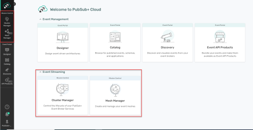
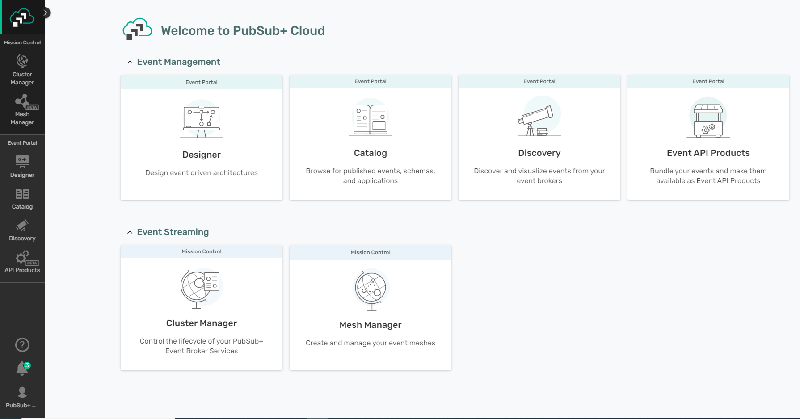
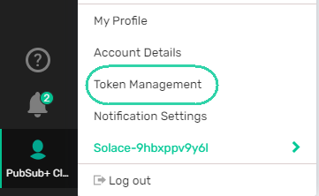
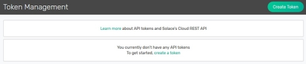
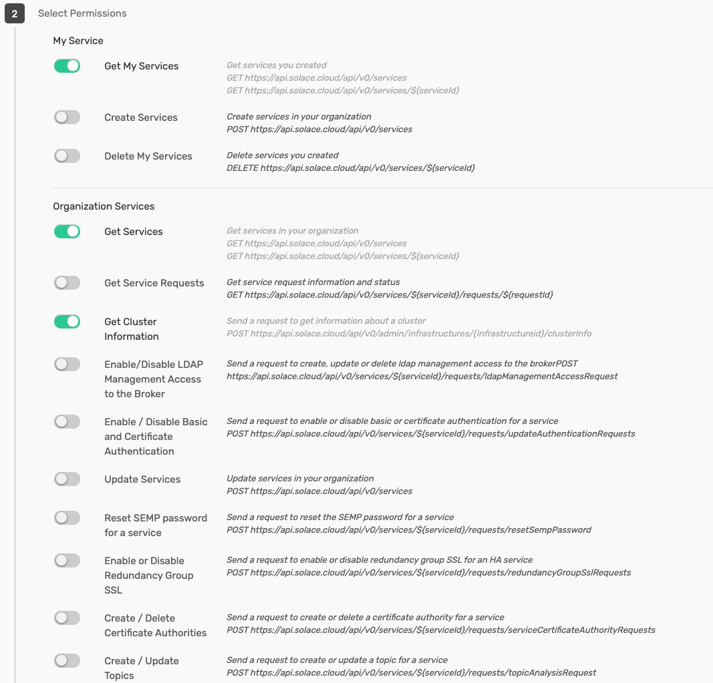
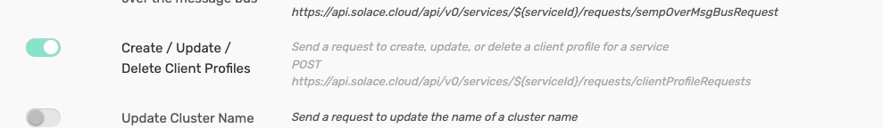
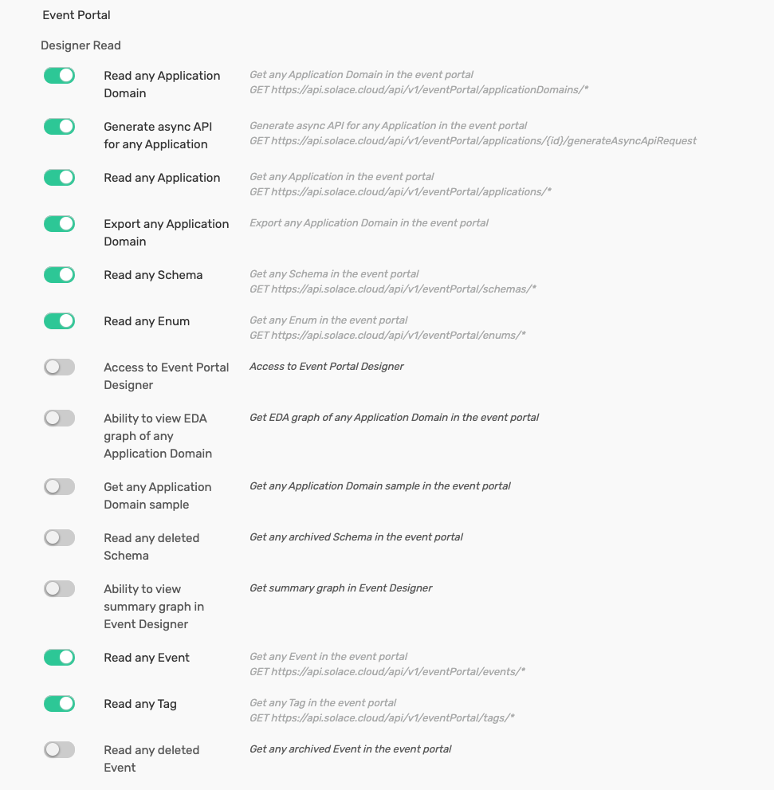
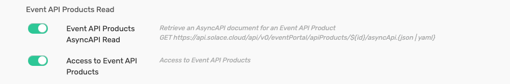

Prerequisites - Getting Started with PubSub+ Cloud
To get started with PubSub+ Cloud, you can use a trial account. The sections below provide an overview and the Solace Doc site contains more detailed information to get started.
Accessing PubSub+ Cloud
Before You Begin
Before you begin, you require an email address to register your trial account (see below).
To use PubSub+ Cloud, you require a supported web browser. For a list of supported browsers, see Supported Web Browsers.
Creating a Free Trial Account
If you don’t have a Solace Cloud Account yet, you can sign up for a Free Trial PubSub+ Cloud account via a web browser; otherwise, use your account to login using the steps in the following section. The Free Trial account is sufficient for this and the other tutorials in this help, but you can use a Starter, Professional, or Enterprise account as well.
In your browser, visit the New Account page, enter the requested information, and you’ll be logged into the PubSub+ Cloud.
Logging in to the PubSub+Cloud Console
To start using PubSub+ Cloud, log in to the PubSub+Cloud Console. From there take a look around to familiarize yourself with the interface:
If you aren’t logged into PubSub+ Cloud, in a browser, go to the PubSub+ Cloud login page at https://console.solace.cloud/login.
Enter in your email and password that you used when you signed up and then click Sign in.
You should now be logged in to the PubSub+Cloud Console.
Take a tour of the Cloud Console if it’s your first time.
Tour of the PubSub+Cloud Console
Before you start your journey to learn about PubSub+ Cloud, let’s take a tour of the Cloud Console.
The first page is the Welcome page that shows the tools that you can use, based on the roles that you’re assigned. On the left, is a navigation bar that remains static so that you can jump from tool to tool as required.
If you are on a trial, on the Welcome page, the top-right corner shows the number days left in your trial.
The PubSub+Cloud Console is the interface for you to access the PubSub+ Cloud services for event streaming.
To access these services, you can select the tool from the navigation bar or click a card on the Welcome page.
To manage event streaming, you use Mission Control. Mission Control. Mission Control provides the following tools:
Cluster Manager: You use this tool create, configure, and manage event broker services. For more information, see Cluster Manager.
MeshManager: You use this tool to visualize and connect your event broker services. For more information, see MeshManager (Beta).
The following illustration shows where Mission Control is located and where you can select Cluster Manager and MeshManager:
To learn more about the other capabilities provided in Solace Cloud see Tour of the PubSub+ Cloud Console on the Solace Docs site.
Creating your Event Broker Service
After you have logged into the PubSub+Cloud Console, you’ll see a welcome page with a navigation bar on the left-hand side of the page:
On the navigation bar, is Mission Control. Mission Control allows you create and configure event streaming. In particular, you use Cluster Manager to create and manage your event broker service. When you launch Cluster Manager, you go to the Services page. This page shows you the event broker services that are available to you. If this your first service on the account, there won’t be any services. Follow these steps to create your event broker service:
If you aren’t logged into PubSub+ Cloud, in a browser, go to the PubSub+ Cloud login page.
In the PubSub+Cloud Console, on the navigation bar, select Cluster Manager .
On the Services page, click the Create Service button located on the top right corner of the page or click the Create Service card.
In the Select Service Type step, select the type of service to use.
For your first event broker service, select any available service type. PubSub+ Cloud offers service types that provide various levels of messaging performance. Some of these service types may be inaccessible before configuring a billing method for your account. You can request access to additional service types later. If you have a trial account, you will only have access to one Developer service. For now, select Developer.
In the Select Cloud step, select a cloud provider from the drop-down menu. For example, select Amazon Web Services.
In the Select Region step, choose where the you want the service to run. To do this, click the map and choose a region for the provider you selected, and then click OK. For your first event broker service, choose the region closest to your geographical location. For example, choose Canada Central (Montreal).
In the Service Details step, do the following:
Leave the default version in the Select Your Broker Version drop-down.
Enter a name for the event broker service in the Service Name field. An event broker service is identified by its name.
Click Start Service to create your first event broker service.
You’ve now created your event broker service!
Creating an API Token
To connect your APIM-Connector to Solace Cloud, you need an API token as the connector utilises the Solace Cloud REST API.
To get an API token, you must generate it in the PubSub+ Cloud Console. You generate and manage API tokens at an account level and also configure the permissions it has (i.e., a subset of the permissions you have when you log in to the PubSub+ Cloud)
Before you can start managing APItoken for using the PubSub+ Cloud RESTAPIs, you require the following:
A PubSub+ Cloud account.
A role assigned that allows you create an APItoken and assign the proper permissions to that APItoken. In the steps below, we show the permissions available for assigning if your account had the Administrator role.
The following steps show you how to create an API token that has the permissions to use a majority of the PubSub+ Cloud REST API, Event Portal REST API, and event broker service REST API. It’s important to note that after you create the APItoken, you cannot modify a token’s permissions. If you require updated permissions, you must create another token.
You can use the following steps to create an API token:
Log in to PubSub+ Cloud. If you belong to multiple accounts (or Workspaces), select the account you want to create anAPItoken for when prompted after logging in.
At the bottom of the left-hand menu, click the user icon, and then click Token Management.
In the top-right corner, click the Create Token button.
On the Create Token page, in the Token Name box, type a unique name for the API token.
On the Select Permissions section, click the toggle beside the permission you want to enable .
Please enable the permissions for the following endpoints:
My Service, Organization Services
 Event Portal -> Designer Read
Event Portal -> Event API Products Read
